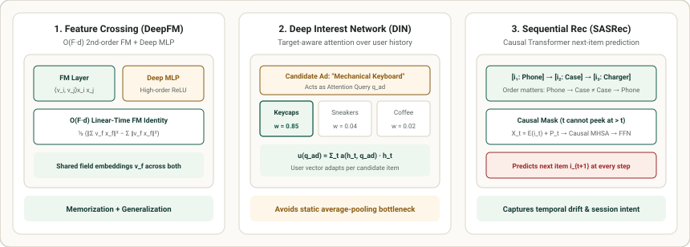

3. Deep CTR & Sequential Recommenders: Wide & Deep, DeepFM, DIN & SASRec
Once candidate generation narrows millions of items down to a few hundred, the heavy ranker must predict precise engagement probabilities ($\text{pCTR}$, $\text{pCVR}$) by combining dozens of categorical fields (User ID, Item Category, Hour of Day, Device) with the user's chronological interaction sequence. This chapter derives DeepFM's $O(F \cdot d)$ feature-crossing identity, Alibaba's Deep Interest Network (DIN) target-aware attention, and SASRec causal Transformer next-item prediction.

1. Feature Crossing: From Wide & Deep to DeepFM's $O(F \cdot d)$ Identity
In CTR prediction, combinatorial interactions between categorical features carry huge signal: App = FoodDelivery AND Hour = 19:00 has a much higher click rate than either feature alone. Google's Wide & Deep (Cheng et al., 2016) combined a linear "Wide" model (using manually engineered cross-product features) with a "Deep" MLP over dense embeddings.
DeepFM (Guo et al., 2017) eliminated manual feature engineering by replacing the Wide component with a Factorization Machine (FM) that shares the exact same $d$-dimensional field embeddings $\mathbf{v}_f \in \mathbb{R}^d$ with the Deep MLP. Naively summing all $\binom{F}{2}$ pairwise dot products takes $O(F^2 d)$ time across $F$ active fields. Rendle's algebraic trick reduces this to linear time $O(F \cdot d)$:
In vector notation, that is simply $\frac{1}{2} \left( \left\|\sum_{i=1}^F \mathbf{e}_i\right\|_2^2 - \sum_{i=1}^F \|\mathbf{e}_i\|_2^2 \right)$ where $\mathbf{e}_i = \mathbf{v}_i x_i$—computed in two tensor reductions!
2. Deep Interest Network (DIN): Target-Aware History Attention
A user who bought Keycaps, Running Shoes, and Espresso Beans over the past month has diverse interests. If we average-pool their historical item embeddings $\frac{1}{T} \sum_{t=1}^T \mathbf{h}_t$ into a single static user vector, the unrelated Running Shoes and Espresso Beans dilute the signal when scoring a candidate ad for a Mechanical Keyboard.
Alibaba's Deep Interest Network (DIN) (Zhou et al., 2018) uses the candidate item embedding $\mathbf{q}_{\text{ad}}$ as an attention query over the user's historical item embeddings $\{\mathbf{h}_1, \dots, \mathbf{h}_T\}$:
Notice that DIN intentionally does not normalize the attention weights $a(\mathbf{h}_t, \mathbf{q}_{\text{ad}})$ with a softmax! Why? If a user has $5$ past keyboard purchases, the sum of their attention activations should be larger than if they had only $1$, preserving the intensity of interest.
3. SASRec: Causal Self-Attention for Sequential Recommendation
DIN treats history as an unordered bag of items. Yet order is critical: buying a Phone today predicts buying a Phone Case tomorrow, whereas buying a Phone Case today rarely predicts buying a new Phone tomorrow. SASRec (Kang & McAuley, 2018) feeds the chronological sequence $(i_1, i_2, \dots, i_T)$ with learnable positional embeddings $\mathbf{P}_t \in \mathbb{R}^d$ into a causal (left-to-right masked) Transformer:
At step $t$, the causal mask ensures $\mathbf{S}_t^{(L)}$ only attends to positions $\le t$, predicting the next item $i_{t+1}$ via inner product $\hat{r}_{t, i} = \langle \mathbf{S}_t^{(L)}, \mathbf{e}_i \rangle$.
4. Worked Numerical Example: Mean-Pooling vs. DIN Target Attention
Suppose a user's history contains $3$ items in $\mathbb{R}^2$: $h_1 = [1.0, 0.0]$ (Keycaps), $h_2 = [0.0, 1.0]$ (Sneakers), and $h_3 = [-0.6, 0.8]$ (Coffee). We score a candidate ad $q_{\text{ad}} = [1.0, 0.0]$ (Mechanical Keyboard):
| Aggregation Method | Weights on $[h_1\text{ (Keycaps)}, h_2\text{ (Sneakers)}, h_3\text{ (Coffee)}]$ | Resulting User Representation $\mathbf{u}$ | Dot Product $\langle \mathbf{u}, \mathbf{q}_{\text{ad}} \rangle$ |
|---|---|---|---|
| Static Average Pooling | $[0.333,\; 0.333,\; 0.333]$ (Uniform) | $[0.133,\; 0.600]$ (Diluted by Sneakers/Coffee) | $+0.133$ (Weak match!) |
| DIN Target Attention | $[0.900,\; 0.050,\; 0.020]$ (Focused on $h_1$) | $[0.888,\; 0.066]$ (Aligned with Keyboard taste) | $+0.888$ ($6.7\times$ stronger!) |
5. Minimal PyTorch Implementation: DeepFM Layer + DIN Target Attention
import torch
import torch.nn as nn
class DeepFMAndDINRanker(nn.Module):
def __init__(self, num_fields: int, vocab_size: int, dim: int = 16):
super().__init__()
self.emb = nn.Embedding(vocab_size, dim)
self.att_mlp = nn.Sequential(nn.Linear(4 * dim, 16), nn.PReLU(), nn.Linear(16, 1))
self.deep_mlp = nn.Sequential(nn.Linear(num_fields * dim + 2 * dim, 32), nn.ReLU(), nn.Linear(32, 1))
def fm_second_order(self, field_embs: torch.Tensor) -> torch.Tensor:
"""O(F * d) Factorization Machine pairwise interaction."""
# field_embs: (B, F, d)
sum_of_sq = field_embs.sum(dim=1).pow(2) # (B, d)
sq_of_sum = field_embs.pow(2).sum(dim=1) # (B, d)
return 0.5 * (sum_of_sq - sq_of_sum).sum(dim=-1, keepdim=True)
def din_attention(self, hist_embs: torch.Tensor, cand_emb: torch.Tensor) -> torch.Tensor:
"""Target-aware attention over user history without softmax normalization."""
# hist_embs: (B, T, d), cand_emb: (B, d)
q = cand_emb.unsqueeze(1).expand_as(hist_embs)
att_in = torch.cat([hist_embs, q, hist_embs - q, hist_embs * q], dim=-1)
weights = self.att_mlp(att_in) # (B, T, 1)
return (weights * hist_embs).sum(dim=1) # (B, d)
def forward(self, fields: torch.Tensor, hist_ids: torch.Tensor, cand_id: torch.Tensor) -> torch.Tensor:
f_embs = self.emb(fields) # (B, F, d)
h_embs = self.emb(hist_ids) # (B, T, d)
c_emb = self.emb(cand_id) # (B, d)
fm_out = self.fm_second_order(f_embs)
u_din = self.din_attention(h_embs, c_emb)
deep_in = torch.cat([f_embs.flatten(1), u_din, c_emb], dim=-1)
return torch.sigmoid(fm_out + self.deep_mlp(deep_in)).squeeze(-1)
model = DeepFMAndDINRanker(num_fields=4, vocab_size=500, dim=16)
probs = model(torch.randint(0, 500, (3, 4)), torch.randint(0, 500, (3, 10)), torch.randint(0, 500, (3,)))
print("Predicted CTRs:", probs.detach().numpy().round(4))